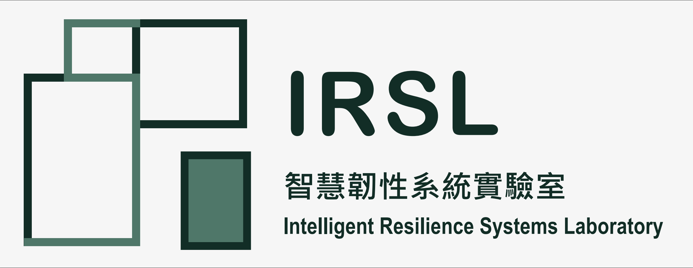

IRSL 致力於打造智慧且具韌性的系統，核心精神是讓人工智慧不只停留在實驗室的理想情境，而能在真實世界充滿不確定性、 資訊不完整的條件下，依然可靠地協助決策與執行任務。我們相信智慧代理人（Agentic AI）技術真正的價值， 在於應用到攸關民生安全與效率的關鍵領域，例如醫療作業、土木基礎設施與資訊安全，並在這些領域中展現韌性， 也就是在突發狀況、資源有限或環境變動時仍能維持穩定表現的能力。
我們的研究涵蓋五個主要方向。在 Agentic AI 與多代理人框架上，開發能自主推理、規劃並執行任務的系統架構； 在醫療作業研究上，聚焦行動篩檢站的路線規劃、資源分配與疫情應變調度，協助醫療量能在壓力下仍能有效運作； 在 BIM／MEP 工程上，開發基於 IFC 模型的自動化衝突偵測與排除方法，加速建築設計與施工協調的效率； 在醫療人工智慧與臨床自然語言處理上，研究如何從臨床文本中萃取結構化資訊，同時妥善處理敏感健康資料； 在 LLM 代理人安全上，則探討大型語言模型代理人系統可能面臨的越獄攻擊，並發展相對應的防禦機制。 這五個方向看似分散，但共同的主軸，是讓智慧系統在真實且經常不完美的環境中，仍然值得信賴。
在研究成果上，實驗室的工作已發表於 Indoor Air、Advanced Engineering Informatics、Journal of Building Engineering、 IEEE Transactions on Industrial Electronics、Automation in Construction 等國際期刊，並取得兩項中華民國發明專利。 我們也與高雄醫學大學附設中和紀念醫院展開產學合作，將 AI 技術實際導入病歷文本結構化與癌症個案報告解析等臨床場景， 目前亦執行國科會「Agentic AI 輔助工程協調與韌性資源調度」計畫。在運作方式上，IRSL 以指導研究生與大學部學生參與 真實研究問題為核心，並與建築、土木與醫療等領域的教授與機構保持跨領域合作，期望讓學生在訓練研究能力的同時， 也能累積解決真實世界問題的經驗。
用於自主推理、規劃與領域特定任務執行的多代理人框架。
行動篩檢站的最佳化與路徑規劃、資源分配，以及疫情應變調度。
基於 IFC 之建築資訊模型自動化衝突偵測與排除。
臨床文本理解與敏感健康資訊處理。
大型語言模型代理人系統之越獄攻擊與防禦。
十億營造誠摯徵求對監控系統（如邊坡監測、自動化監測系統等）有興趣之人才加入團隊。有意應徵者請下載履歷表填寫，並寄至下方信箱洽詢應徵事宜。
下載應徵者履歷表 · Email：hchsu@nkust.edu.tw
Email：hchsu@nkust.edu.tw
國立高雄科技大學 電機工程系